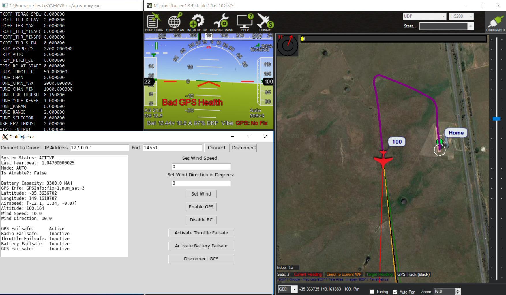

At AFIT, in the summer of 2017, I created a fault injection application which triggers failsafes in ardupilot UAVs. At AFIT, many people work with unmanned aerial vehicles, often using open source software from the productive RC hobbyist community. Small and midsized unmanned aerial systems running open source sofware are great for prototyping features for future commercial and military systems.
For research purposes, you often have to fly UAVs in unfavorable conditions, at high altitudes, and without necessary resources. When UAVs encounter GPS failure, communication loss, or battery drain, they have programmed fail safes that activate. Sometimes, fail safes don't do exactly what operators expect. It is important to test these fail safes before flying the expensive equipment, especially around humans. Before this application was created, testing fail safes was difficult. You would either have to set up a simulated environment and input esoteric commands from multiple sources to test different failures, or you would have to fly the vehicle in a controlled environment and activate the failures yourself by creating real failures.
Fault Injector is an application written in python which simplifies the simulated testing of UAV failure modes by providing a simple graphical user interface. Before Fault Injector, to test a UAV in a simulated environment, one would have to create a SITL simulation of the vehicle, connect to the simulation using MAVproxy, and then enter a series of unintuitive commands which translates to whichever system failure they would like to test. With Fault Injector, you can simply create the sitl simulation, connect to it, and start injecting failures at the push of a button. Fault Injector doesn't just work with SITL alone. You can use Fault Injector to connect to MAVproxy as well, if you desire to connect multiple ground stations, or if that is your prefered means of communication with your vehicle.
To develope this applicaton, I had to integrate more open source libraries and software packages than ever before for any of my projects or research. I worked with dronekit, mavlink, SITL, MAVproxy, JSBSim, flightgear, ArduPilot, Mission Planner, and others to develope and test this software. Our intention was for this application to be easily integrated into the current open source software ecosystem used by RC hobbyists and researchers alike, and I believe we succeeded.
This application is currently being used at AFIT by the Automation and Navigation Technologies (ANT) center. If you would like to check out this application, you can download it here.